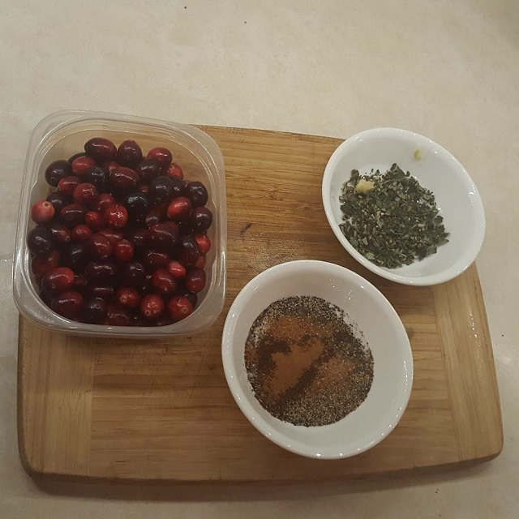

Winter sausage recipe
Items needed
Ingredients:
- 7 pounds of pork
- 1.5 cup cranberries
- half clove of garlic
- 5 tsp black pepper
- 5 tsp salt
- 2.25 Tbsp fresh sage
- 1/2 tsp of nutmeg
- 1/2 tsp of clove
- 1/8 tsp of cinnamon
- sausage casings and ties
Equipment and supplies:
- meat grinder with sausage filler attachment
- large knife (cleaver or chef's knife)
- a few bowls
- butcher's twine
Procedure
The following is best done with two or more people—one to feed the pork into the grinder and the other to feed the grinder's output into the casings.
- Crush and chop cranberries and set aside.
- Mix all spices together in a bowl and set aside.
- Chop pork into small pieces with knife and place in large bowl. Keep the bowl as cold as possible.
- Feed chopped meat into grinder and collect ground output into another bowl.
- Thoroughly mix ground meat, cranberries, and spices together in large bowl.
- Attach the sausage filler attachment to the grinder and place a casing on the end.
- Turn on the grinder's motor or begin rotating it by hand if using a manual one.
- Begin feeding the sausage mix into the grinder.
- Every seven inches or so, twist the casing 2–3 revolutions and tie off with butcher's twine to create a new link.
- Continue until the casing is filled and tie off the end.
- Repeat steps 8–10 as necessary to fill up casings until the pork is gone.
Freeze raw and store in freezer for up to three months.
